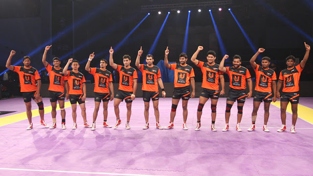
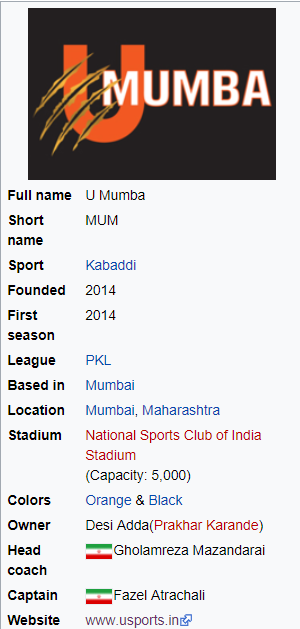

©Copy Right Pro Kabbadi 2018.All Rights Reserved. Social on


U Mumba (MUM) is a Kabaddi team based in Mumbai, Maharashtra that plays in the Pro Kabaddi League. The team is currently led by Fazel Atrachali (kabaddi)Fazel Atrachali and coached by Bhaskaran Edacherry. The team is owned by Unilazer Ventures Pvt. Ltd owned by Ronnie Screwvala. U Mumba play their home matches at the Sardar Vallabhbhai Patel Indoor Stadium, Mumbai. They won Pro Kabbadi League 2015 by defeating Bengaluru Bulls 
Pro Kabaddi League (PKL) is a professional kabaddi league in India, based on the format of the Indian Premier League T20 cricket tournament. The first edition of the tournament was played in 2014 with eight franchises representing various cities in India. U Mumba is a Mumbai based franchise owned by Unilazer sports promoted by Ronnie Screwvala.